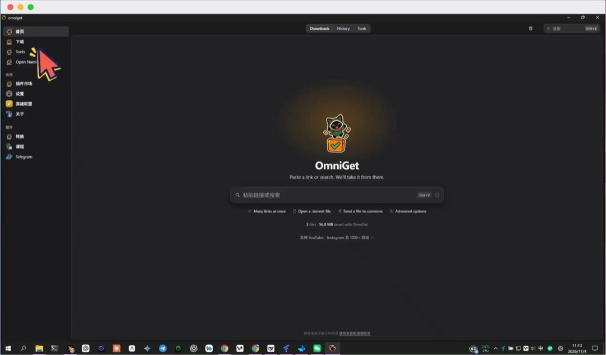

本期速览
01 Eleven Turbo延迟150ms
02 Cowboy开Agent沙箱应用商店
04 OmniGet开源批量下载1800站视频
05 Beat Sheet节拍表驱动长视频节奏
01｜Eleven Turbo延迟150ms
来源（X） · @ElevenLabsDevs · 2026-10-21 01:23
中文译文
表达力与速度相遇，约 150ms。Eleven v4 Turbo：REST、流式传输和 SDK —— 只需切换一个 model_id 即可更换模型。
原文
Expressiveness meets speed at ~150ms. Eleven v4 Turbo: REST, streaming and SDKs — switch models with one model_id.
02｜Cowboy开Agent沙箱应用商店
来源（X） · @tibopake · 2026-11-05 04:08
开张已有 100 多个 agent、1 万条数据流。
判断：agent 想卖出价，拼的不是模型多强，是买家敢不敢放心雇。
03｜美企居家办公多层安全管控
来源（X） · @yiqifacai · 2026-11-04 15:43
公司发的电脑登录界面就要 Akamai 的认证，有密码进不去要弹到受监控的工作手机上，才能登进系统。那个手机基本就是废物，除了打电话看邮件和验证登录，什么都装不了。
进了系统之后，后台跑着一堆监控程序，什么白名单以外更新都装不了，唯一有用是谷歌浏览器，但是受限谷歌企业账户的管理，不能安装白名单以外任何插件。查资料之类 AI 只能用公司企业的谷歌 AI， 所有聊天记录都删除不了。接着还得拨 VPN，VPN 又要来一次 Email code 验证，之后才能登录公司的跳板机，跳板机上又是 AKamai 认证，跳板机上全程都是录像，而且和互联网完全隔离，至于部署的API 都是临时的，一次申请用完就作废。
他连在公司电脑上看油管登录招聘网站都不敢，更别说面试和下面试题了。
听完我觉得币安之前似乎确实没做好。
04｜OmniGet开源批量下载1800站视频
来源（X） · @hiwise_aigc · 2026-11-04 11:47
开源神器 OmniGet，复制链接就能下载。
我实测了小红书、抖音、YouTube，视频都能正常解析下载。
还支持 X、B站等 1800+ 网站，以及 Udemy、Coursera 等课程平台。
批量下载、字幕提取、音视频转换也都支持。
最最重要的是免费开源，无广告啊，而且Windows、macOS、Linux 都能用。
做 AI 视频、收集素材的兄弟，赶紧收藏！
🔗 https://github.com/OpenSelena/omniget
以后下载视频，还需要到处找解析网站吗？😂

05｜Beat Sheet节拍表驱动长视频节奏
来源（X） · @goshenggo · 2026-11-04 23:20
这个概念来自编剧书《救猫咪》，我大学编剧课学到的，我觉得做内容的人都该读一遍 反复研究。简单说也好理解，这就是一份带节奏的大纲，每一段除了写讲什么，还得想清楚两件事：这段给观众什么新信息，情绪往哪边带。我创作初期主要就是对着这个反复打磨。
长视频最怕的是观众看到一半走神。我现在的习惯是先在表格里把每个节拍排好，节奏定死了再开始写词。很多我辅导过的创作者，哪怕是天赋型选手很多都直接写，写出来经常是一路平铺，自己回看都犯困，真的 你有天赋当然好，但是你没技巧其实很埋没你的天赋。
特别 尤其 是现在用 Claude Code + HyperFrames 做视频的时代，这一步更重要了，甚至能决定你做出来的是电子 PPT 还是像样个电影。
HyperFrames 其实就是拿网页在做视频。每个镜头是一个 scene，写好第几秒开始、持续多久，再用一条 GSAP 时间轴串起来渲染，你看，这不就是一张节拍表吗。
所以你直接丢给 Claude 一篇逐字稿，它只能平均切，镜头和动效都很僵。但你给它一张标好情绪重音、信息密度的节拍表，每个 BEAT 直接对应一个 scene，哪里停、哪里快、哪里上强动效，他就知道了 对你创作尤其重要。
节奏这东西得写稿前就设计好，指望后期剪出来真累死你还费token。v